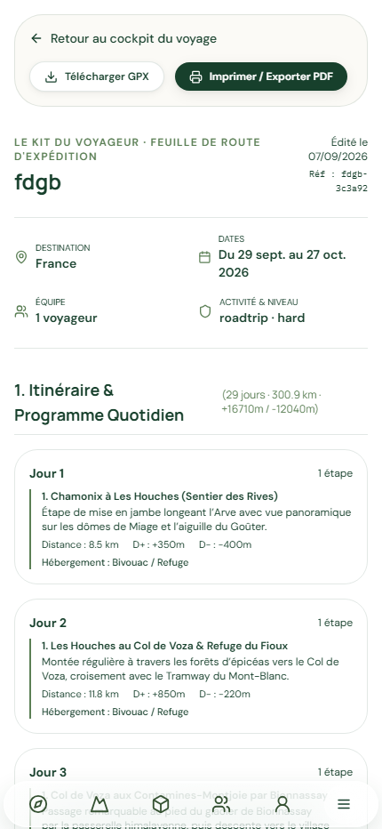
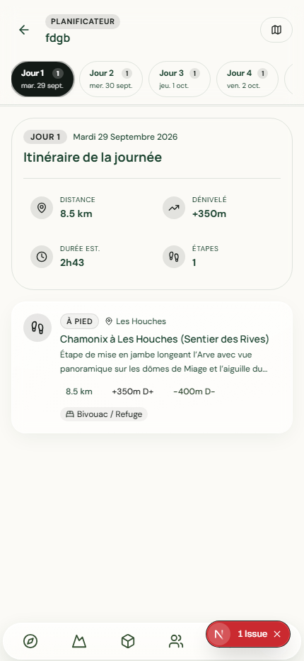
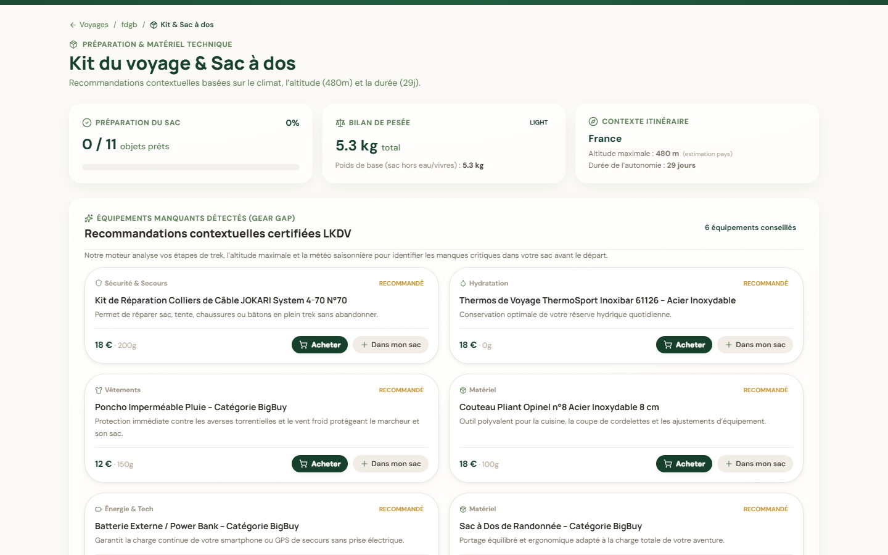
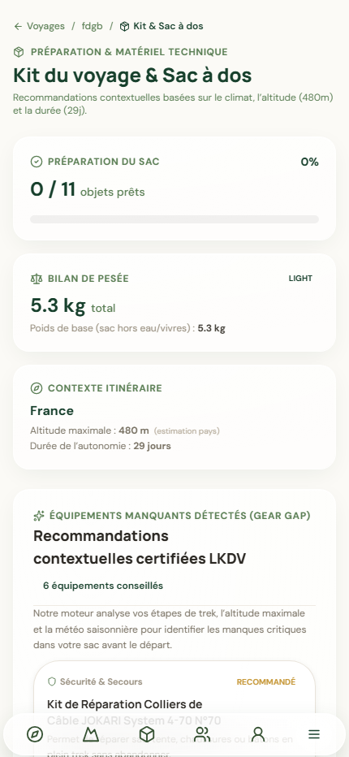
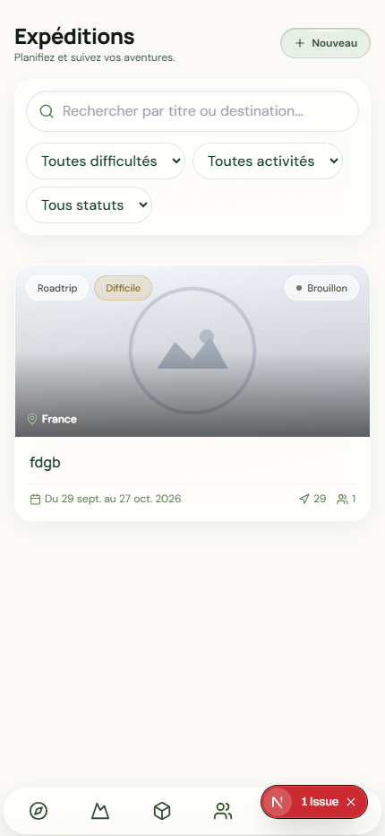
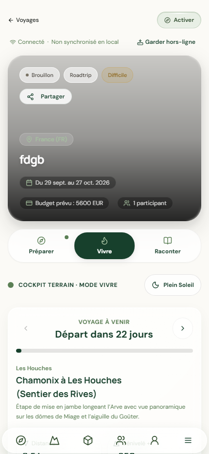
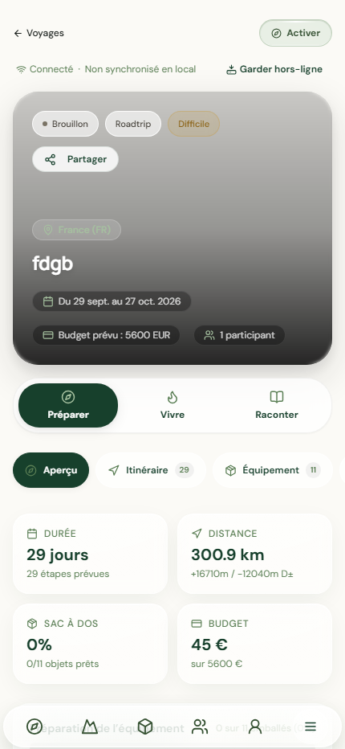
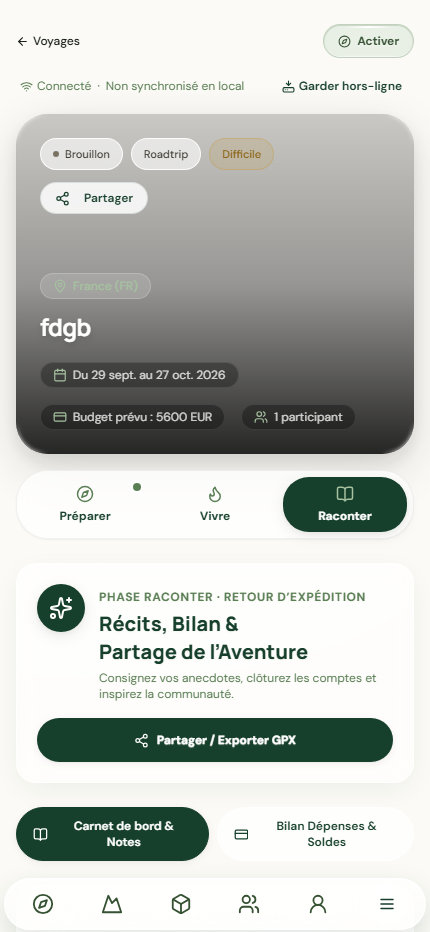

voyages-export-visual.spec.ts-snapshots/voyage-export-desktop-chrome-win32.png111 Kovoyages-export-visual.spec.ts-snapshots/voyage-export-ipad-portrait-win32.png5 Ko

voyages-export-visual.spec.ts-snapshots/voyage-export-iphone-14-pro-win32.png105 Ko
voyages-itineraire-visual.spec.ts-snapshots/voyage-itineraire-desktop-chrome-win32.png102 Ko

voyages-itineraire-visual.spec.ts-snapshots/voyage-itineraire-iphone-14-pro-win32.png85 Ko
voyages-kit-visual.spec.ts-snapshots 3 capture(s)

voyages-kit-visual.spec.ts-snapshots/voyage-kit-desktop-chrome-win32.png252 Kovoyages-kit-visual.spec.ts-snapshots/voyage-kit-ipad-portrait-win32.png5 Ko

voyages-kit-visual.spec.ts-snapshots/voyage-kit-iphone-14-pro-win32.png147 Ko
voyages-liste-visual.spec.ts-snapshots/voyages-liste-desktop-chrome-win32.png541 Kovoyages-liste-visual.spec.ts-snapshots/voyages-liste-ipad-portrait-win32.png61 Ko

voyages-liste-visual.spec.ts-snapshots/voyages-liste-iphone-14-pro-win32.png87 Ko
voyages-live-visual.spec.ts-snapshots/voyage-live-desktop-chrome-win32.png573 Kovoyages-live-visual.spec.ts-snapshots/voyage-live-ipad-portrait-win32.png5 Ko

voyages-live-visual.spec.ts-snapshots/voyage-live-iphone-14-pro-win32.png116 Ko
voyages-prepare-visual.spec.ts-snapshots/voyage-prepare-desktop-chrome-win32.png581 Kovoyages-prepare-visual.spec.ts-snapshots/voyage-prepare-ipad-portrait-win32.png5 Ko

voyages-prepare-visual.spec.ts-snapshots/voyage-prepare-iphone-14-pro-win32.png107 Ko
voyages-recount-visual.spec.ts-snapshots/voyage-recount-desktop-chrome-win32.png588 Kovoyages-recount-visual.spec.ts-snapshots/voyage-recount-ipad-portrait-win32.png5 Ko

voyages-recount-visual.spec.ts-snapshots/voyage-recount-iphone-14-pro-win32.png113 Ko